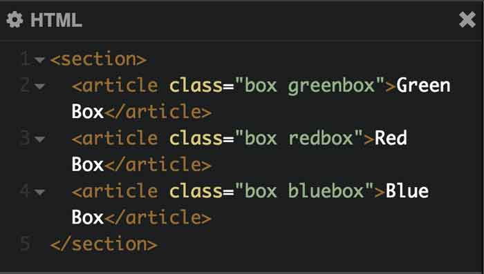
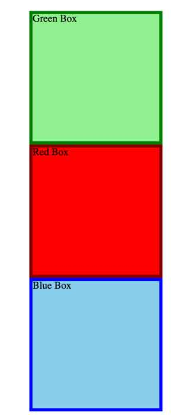
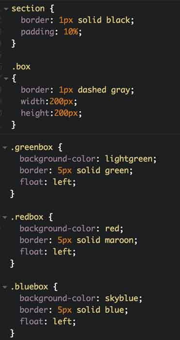
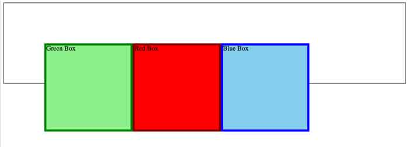
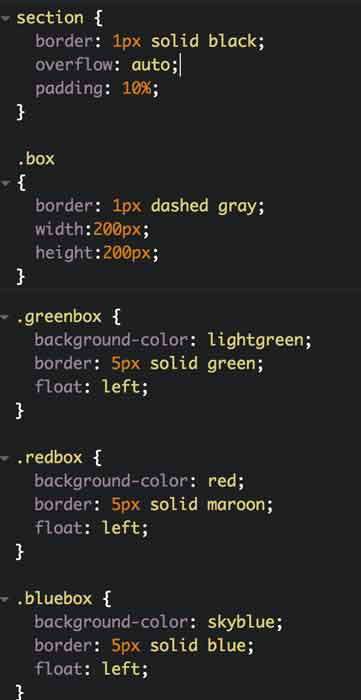
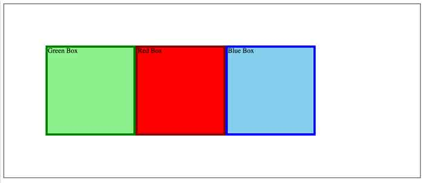

Float and Overflow
As we do our Agile review at the start of class, it seems as though most people have concerns about floating. Fortunately that's what we spend more of our class time working on, and it becomes clearer.
Using the ever-handy CodePen, we build some boxes: a red one, a green one and a blue one. When they're first popped in to the HTML, with just enough CSS to give them color and dimension, they look like this:

Next...we give our red box the CSS rule float: left;.
Instant trouble! Our red box disappears! This is because while it has floated left, it has been removed from the normal page flow. The green and the blue box no longer even realize that it exists, so they scoot merrily up to the top of the page, covering up their red colleague. Bad. So...all of the boxes must have float: left; applied to them, like so:

Now, we have a new problem, though, because we made an enclosing box with a border -- and it doesn't know how to handle those floats either, leaving us with an image that looks like this:

The solution is to put one more rule into the CSS for the containing box: overflow: auto;. The resulting code looks like this:

And the result is:

Class Naming Conventions
One of aspects of web development that has me confused is how to name classes, so that they're semantically meaningful, and don't lead to additional confusion. We talk a little bit about it in class, but afterward, I go looking to see what resources I could find online. Here are some:
It's now clear that things are even more complicated than I'd realized. I've stumbled into a religious war -- how do you capitalize? How do you semantically structure the class names? I'm just looking for easy answers! Are there none...?
More research is definitely required...but for now, I'm going to try my old file-naming trick of going from general to specific. And I'm going to use camel case (with the first letter lower case). I suspect this will evolve, but at least I have a starting point.